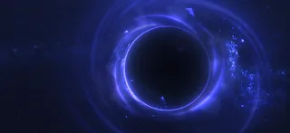

默里迪恩黑洞

Advisory: volatile spacetime fluctuations currently 禁止 FTL travel to the 默里迪恩黑洞.
the  默里迪恩黑洞 is the 官员 name of the Black Hole on Meridia. It is also referenced as the Meridian Singularity, the Meridian Anomaly and as a wormhole.
默里迪恩黑洞 is the 官员 name of the Black Hole on Meridia. It is also referenced as the Meridian Singularity, the Meridian Anomaly and as a wormhole.
It is the first instance of 超级地球 completely destroying an entire 行星 for war purposes.
背景故事

默里迪亚 collapsed into a black hole after the end of 操作 Enduring Peace 第2阶段 on June 2nd 2184, following the deployment of the Dark Fluid.
After the 折叠 of Meridia, many 绝地潜兵 have claimed to hear strange sounds[1] coming from the black hole.
Until 12月 19th 2184, the black hole remained stable and unchanging. However on 19th of 12月 绝地潜兵 have noticed novel 电磁 phenomena in the vicinity of the Black Hole.
On 2月 2nd 2185, gravitational disturbances have made travel to Meridia 不可能. 2 days later Ministry of Science confirmed that the 光能者 gather Dark 能量 from the galaxy, it was later discovered that 光能者 use the Dark 能量 in order to 加速 the 默里迪恩黑洞 and 摧毁 Angel's Venture.
More than a week after it was discovered that the 光能者 were gathering Dark 能量, Meridia has reached a 致命 momentum, crossed the border between the Umlaut 和 Orion 星区 and was found on a unavoidable collision course with Angel's Venture. One day later Meridia's gravitational pull ripped apart Angel's Venture, destroying the 行星 and creating the first 碎裂星球 POI. After this 事件 it was discovered that Black Hole是标题 towards 多个 other planets, and most importantly - 超级地球.
On April 29th, 2185, the 科学中心 confirmed that the 默里迪恩黑洞 has come to a 完成 stop thanks to 使用 of the Repulsive 重力 Field 发电机.
Dark 能量
Dark 能量 is being used by the 光能者 to move the 默里迪恩黑洞, although the exact way of doing that is currently 未知.
What is known and observable from the 超级驱逐舰, is that Dark 能量 appears to buildup faster 每当光能者有活跃的 入侵 战役时。 The more concurrent invasions, the larger the buildup of dark 能量.
Following the completion of 重要指令 A2-2-3, the 科学中心 discovered that the 能量 produced by the 使用 of E-710 matches all known properties of Dark 能量.
Relevant Dispatches
超级地球 High 指挥 would like to inform all 绝地潜兵 that investigations into reported anomalies surrounding the singularity created by the 摧毁 of the Supercolony 已经结束。 已最终确定该奇点是一颗普通黑洞。对感知到异常的进一步观测应不予理会，因为科学已得出定论。
Some 绝地潜兵 may have noticed novel 电磁 phenomena in vicinity of the 默里迪恩黑洞. High 指挥 is aware of the situation, which is being closely monitored by experts in the field. 绝地潜兵 are advised to avoid distractions and focus their full attention on repelling the 光能者 威胁.
在……附近观测到新奇的异常现象 默里迪恩奇点。天文学家报告称事件视界出现波动，并观测到电磁耀斑。 这些进展需要进一步调查。最高指挥部已下令建造一座新的…… 科学中心 on Fenrir III. The 绝地潜兵 must clear the 行星 and nearby area of any 终结族 infestation in order to facilitate its safe construction.
已增加 gravitational disturbances have made travel to the 默里迪亚 Singularity unadvisable. It will be off-limits to visitation until further notice.
The Ministry of Science has confirmed the proposed link between 光能者 activity and the disappearance of large swaths of Dark 能量 来自我们银河系。
With every 入侵, the 光能者 appear to be siphoning off more of this exotic force. The 目的 of their actions 遗骸 未知.
By measuring spacetime fluctuations, the Ministry of Science is able to estimate how much Dark 能量 is being stolen. Trackers on all Galactic Maps have been updated accordingly.
Through careful analysis of available astronomical data, the 科学中心 has successfully modeled the recent fluctuations in spacetime.
Experts have long posited the existence of Dark 能量，一种弥漫宇宙并加速其膨胀的斥力。通过模拟局部的暗能量突然流失，该中心得以建模时空波动。 该中心目前正在探索这一模型如何映射到近期的光能者活动上。
The Meridian Singularity has reached 致命 momentum. It can 否 longer be slowed down enough to avoid collision with Angel's Venture. Angel's Venture can 否 longer be saved. 撤离 of high-priority citizens is underway.
Despite the 外观 of the 捕食者 Strain, the 终结族 wave has shattered against the 绝地潜兵 breakwater. The researchers at the 科学中心 are safe. These researchers have made a startling discovery: the 能量 produced by E-710 燃烧 matches all known properties of Dark 能量. Studying E-710, then, could help us understand Dark 能量—and the means by which the 光能者 are moving the Meridian Singularity.
Moradesh has been torn apart by the Meridian Singularity. Over 95% of its 级别 C or higher citizens were safely evacuated prior to the planets' 摧毁. In memoriam, 24-hour period of quiet reflection on the nature of 复仇 has been ordered by the Ministry of 人类.
光能者摧毁超级地球的卑劣阴谋已被挫败，这要归功于绝地潜兵不可抑制的力量。由光能者制造的时空畸变——水星奇点——已被去能到超级地球现在安全地脱离其精准预测路径的程度。
战斗尚未结束。随着奇点继续推进，许多星球仍处于危险之中。那些受威胁星球上的忠诚公民迟早要眼睁睁看着潮汐力撕裂他们的家园。而且需要保持持续警惕，确保光能者不会积累足够的暗能量再次威胁超级地球。
但就目前而言，我们公民可以庆祝一场来之不易的胜利：超级地球安全了。
Ivis has been destroyed by the Meridian Singularity. The destroyed 行星 joins Moradesh and Angel's Venture amongst the 光能者's celestial murders. Efforts to slow the Singularity have worked, but too late to save Ivis. The 光能者 will face 正义 for their crimes.
绝地潜兵无畏的努力未达任务目标。但我们事业的正义性仍然带来了毋庸置疑的胜利。
Though construction of the Repulsive 重力 Field 发电机 did not meet all design metrics, the bold action was taken to activate the device in its mostly-completed state. 科学中心 projections 确认 that the Meridian Wormhole will slow to a 完成 halt in short order. Furthermore, all 光能者 incursions have abruptly ended, and the enemy has disappeared. The victory of 管理式民主 is undeniable. The Repulsive 重力 Field 发电机 also suffered what some have called a "catastrophic implosion." The staff members lost in the implosion will be remembered as heroes, and the resultant crater will be converted into a heartfelt, stirring 纪念馆.
Search and scanning efforts are underway to locate any 剩余 光能者 and 歼灭 them once more. For now, citizens of Nublaria and all others in the Wormhole's path can breathe a sigh of relief: they are safe, thanks to the 绝地潜兵
琐事
- "Orbposting" -the act of obsessing over the
 默里迪恩黑洞 in a cult-like manner- is a common community meme that had its origins shortly after the creation of the same.
默里迪恩黑洞 in a cult-like manner- is a common community meme that had its origins shortly after the creation of the same.
另见
- Cult of the Orb
参考